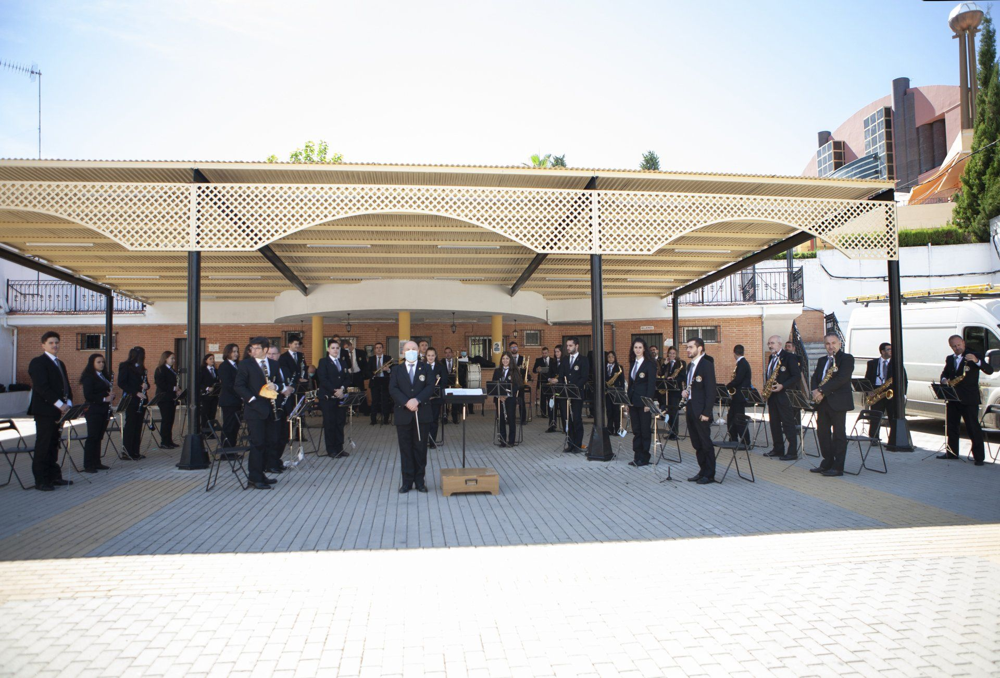
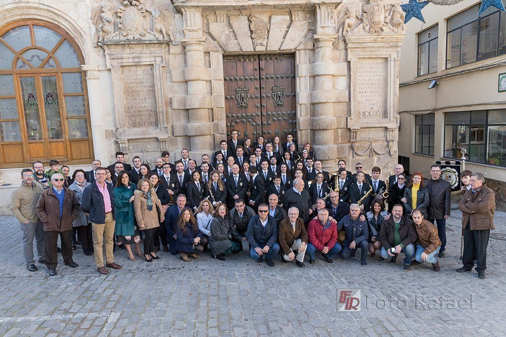

La ciudad de Martos tiene una gran tradición en Bandas de Música. A finales del siglo XIX ya existían varias Bandas particulares, que actuaban en las fiestas religiosas y civiles. Comenzado el siglo XX, el Ayuntamiento crea la Banda Municipal de Música de Martos, en sesión celebrada el 21 de septiembre de 1904, cuando muchas capitales de provincia aún no contaban con estas formaciones. Esta histórica institución, será el referente en este arte, durante la mayor parte del pasado siglo.
El primer director de la Banda Municipal fue Emiliano Gurpegui, quien agrupó a los componentes de las Bandas anteriores. A este maestro, que estuvo al frente hasta 1915, le siguieron Cosme López, Francisco Alarcón y Rufino Olmo, ya en 1926. En estos años, se hace cargo el director que da nombre a nuestra Banda, Joaquín Soler Marín, quien dirigió la Banda Municipal de Martos desde 1928 hasta 1943, elevándola a su máximo esplendor.
Tras el fallecimiento de Soler, le relevaron Antonio Sarabia y Antonio Manzano y en varias etapas, se hizo cargo de la dirección Juan Aranda Hernández, hasta que en 1953 lo hizo Pedro Navarro, quien sería el último director titular, porque en los años 60, el Ayuntamiento decide disolverla, dando fin a décadas de arte y de cultura popular en nuestra tierra.
Una de sus obras más famosas es "Suspiros de España" compuesta por el compositor marteño Jose Antonio Álvarez Cantos. este pasodoble fue parte de la banda sonora que se utilizó en la ceremonia de inauguración de los Juegos Mediterráneos Almería 2005. Incluso ha sido añadido en el cuarto capítulo de la penúltima y cuarta parte de la gran conocida serie La casa de papel.
Aquí teneis un pdf sobre la creación y la producción de la música. PDF
Puedes acceder a la página oficial de la Banda de música pinchando AQUÍ
Aquí os dejamos una tabla con todos los profesores que están impartiendo clases en la escuela de música.
| PROFESORES | |
| José Maestro Caballero | Director, Lenguaje Musical y Clarinete |
| Victoria Vargas Donaire | Flauta, Música y Movimiento |
| Jesús López Melero | Oboe |
| José Luis Maestro Villar | Saxofón |
| Gregorio Alvarez Chamorro | Trompa |
| Gerardo Navas Ortiz | Director Banda Infantil, Viento-Metal |
| Raul Fernández Melero | Percusión |
| Eric Fernández Cuesta | Tambores |
Concierto de Otoño 2020 |
|
|  | |
40º Aniversario Agrupación Maestro Soler |
|
|  | |
Banda de Música "Maestro Soler" - MI AMARGURA |
Banda de Música "Maestro Soler" - SUSPIROS DE ESPAÑA |
Esto es un enlace al principio de la página